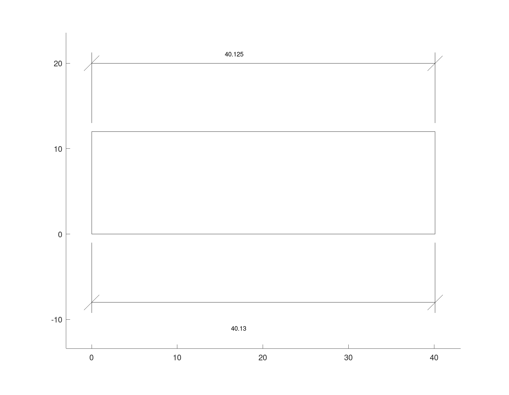
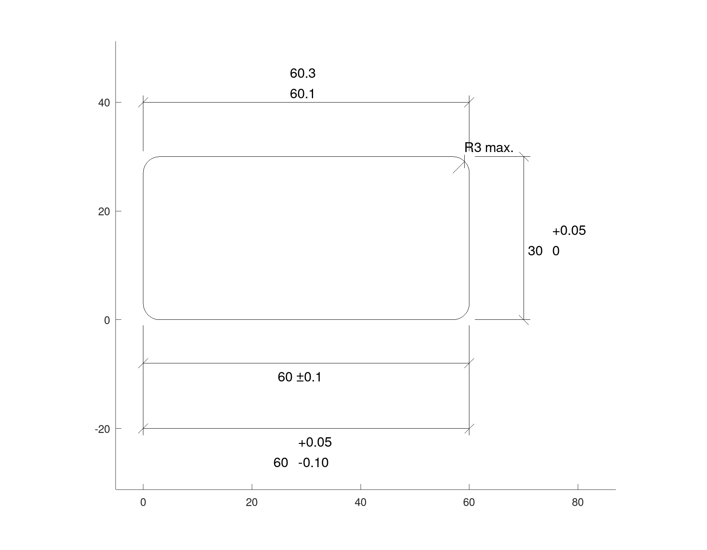
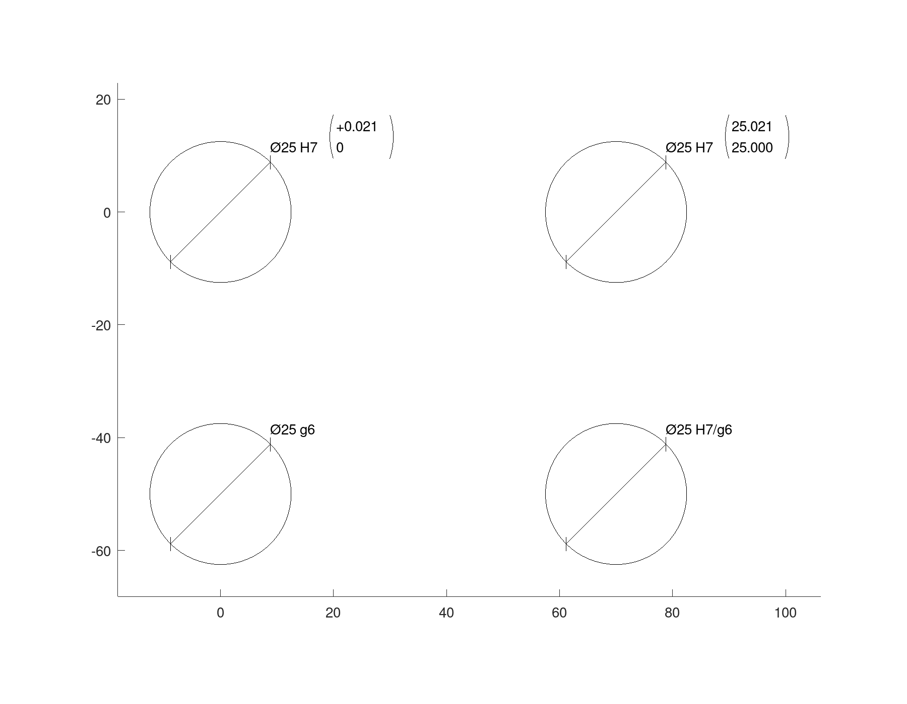
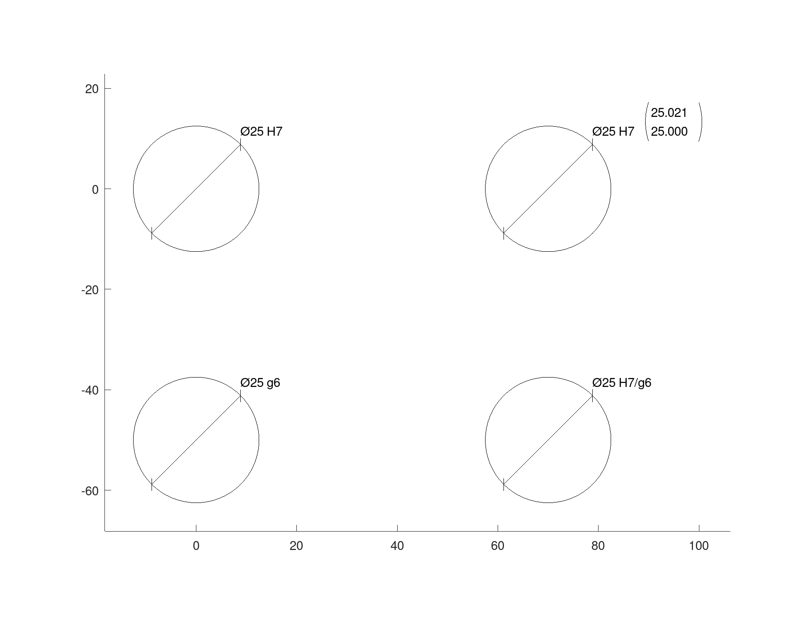
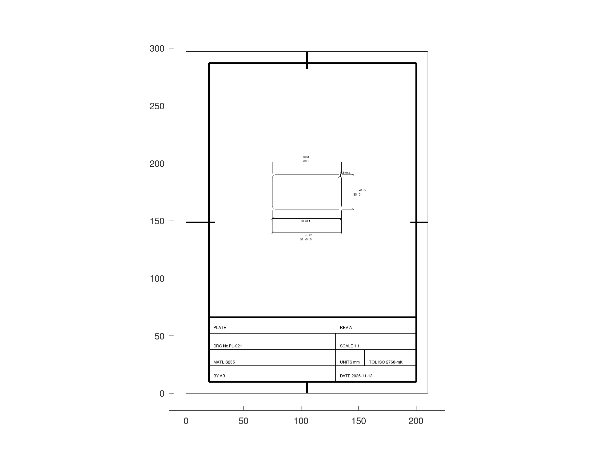

Tolerances and fits
A dimension states a size; a tolerance states how far the part as made may stray from it. This page sets the places a dimension is shown to, gives dimensions their tolerances as ISO 406 writes them, takes classes and fits from the ISO 286 system, and states the general tolerance in the title block.
How many places
Decimals, a property of the drawing, is the number of places every dimension shows its measurement to, 2 by default, trailing zeros dropped. A dimension given its own 'Decimals' shows those instead.
D = draw.Drawing ('pin');
D = D.polyline (geom.Polyline ([0, 0; 40.125, 0; 40.125, 12; 0, 12], ...
'Closed', true));
D = D.dim ([0, 0], [40.125, 0], -8, 'Direction', 'horizontal');
D = D.dim ([0, 12], [40.125, 12], 8, 'Direction', 'horizontal', ...
'Decimals', 3);
D.Decimals
plot (D);ans = 2
Tolerances
'Tolerance' gives a dimension its tolerance:
- a number, a tolerance symmetric about the size:
60 ±0.1; - a pair
[LOWER, UPPER], the lower and the upper deviation, written to the right of the size, the upper above the lower, and a zero as a bare 0; 'min'or'max', a size limited one way only:R3 max.
'Form', 'limits' writes a numeric tolerance as the largest size over the smallest instead, worked out from the size as it is shown. A tolerance shows the places it needs, whatever Decimals says.
A plot draws text at a size on the screen, not in the drawing, so the lines of a tolerance stand where print and a CAD program put them only when the text is sized to the drawing. 'FontScale' does that: the points of type for each millimetre of the drawing, which for these pictures is about 5.
T = draw.Drawing ('plate');
T = T.polyline (fillet (geom.Polyline ([0, 0; 60, 0; 60, 30; 0, 30], ...
'Closed', true), 3));
T = T.dim ([0, 0], [60, 0], -8, 'Direction', 'horizontal', ...
'Tolerance', 0.1);
T = T.dim ([0, 0], [60, 0], -20, 'Direction', 'horizontal', ...
'Tolerance', [-0.1, 0.05]);
T = T.dim ([0, 30], [60, 30], 10, 'Direction', 'horizontal', ...
'Tolerance', [0.1, 0.3], 'Form', 'limits');
T = T.dim ([60, 0], [60, 30], -10, 'Direction', 'vertical', ...
'Tolerance', [0, 0.05]);
T = T.radius ([57, 27], 3, 'Angle', 45, 'Tolerance', 'max');
plot (T, 'FontScale', 5);
Classes and fits of ISO 286
A hole and a shaft meant to fit together are toleranced by classes of the ISO 286 system: a letter for where the tolerance lies, a capital for a hole and a small letter for a shaft, and a grade for how wide it is. draw.isofit gives the deviations of a class at a size, in millimetres, as [LOWER, UPPER]; here in micrometres, as the tables of ISO 286-2 give them.
hole = 1000 * draw.isofit (25, 'H7')
shaft = 1000 * draw.isofit (25, 'g6')hole =
0 21
shaft =
-20 -7Together they are a fit. Its clearance runs from the smallest hole on the largest shaft to the largest hole on the smallest shaft, and here it never closes, so the shaft runs freely.
clearance = [hole(1) - shaft(2), hole(2) - shaft(1)]clearance =
7 41Given to dim or diam, a class is looked up at the size the dimension shows and written as the drawing's FitForm says: by default with its deviations in brackets; with the limits in brackets; or as the class alone. A dimension's own 'Form' takes the place of FitForm. A fit pair, the hole's class over the shaft's, is written as the two classes, as an assembly drawing states it.
F = draw.Drawing ('fits');
F = F.circle ([0, 0], 12.5).circle ([70, 0], 12.5);
F = F.circle ([0, -50], 12.5).circle ([70, -50], 12.5);
F = F.diam ([0, 0], 12.5, 'Tolerance', 'H7');
F = F.diam ([70, 0], 12.5, 'Tolerance', 'H7', 'Form', 'limits');
F = F.diam ([0, -50], 12.5, 'Tolerance', 'g6', 'Form', 'class');
F = F.diam ([70, -50], 12.5, 'Tolerance', 'H7/g6');
plot (F, 'FontScale', 4);
FitForm set to 'class' writes the first as its class alone; the second keeps the limits it was given.
F.FitForm = 'class';
plot (F, 'FontScale', 4);
A class needs the size as measured, so it cannot follow a 'Text', and it must be one the standard defines at the size shown.
F.diam ([0, 0], 0.4, 'Tolerance', 'a9');draw.Drawing.diam: ISO 286 defines no a9 for a size of 0.8 mm.The general tolerance
A dimension with no tolerance of its own takes the general tolerance, which the title block states once for the whole sheet, such as ISO 2768-mK. draw.titleblock writes it beside the units. Here it frames the plate on an A4 sheet stood upright, as ISO 5457 usually has A4; the short strokes at the middle of each side are the centring marks that place the sheet when it is copied. On the whole sheet the text is small, as it is on paper.
f = struct ('title', 'PLATE', 'drawing', 'PL-021', 'material', 'S235', ...
'scale', '1:1', 'units', 'mm', 'tolerance', 'ISO 2768-mK', ...
'date', '2026-11-13', 'drawnby', 'AB', 'revision', 'A');
S = draw.titleblock ('A4', f, 'Orientation', 'portrait');
S = S.merge (T.transform ('translate', [75, 160]));
plot (S, 'FontScale', 1.25);
print places a framed sheet by its trimmed edge and on paper standing the same way, so the upright sheet comes out on upright A4 at 1:1.
[paper, scale] = print (S, 'plate.pdf', 'Margin', 0)paper =
210 297
scale = 1In a DXF file
A numeric tolerance is written as an override of the dimension style, so a CAD program that measures the dimension again shows the tolerance with it. A class, and min. or max., are written as the dimension's text, the deviations of a class as figures that stay as they were if the size is changed in another program. draw.read brings every tolerance back as it was given, with Decimals and FitForm.
write (F, 'fits.dxf');
R = draw.read ('fits.dxf');
R.FitForm
plot (R, 'FontScale', 4);ans = class